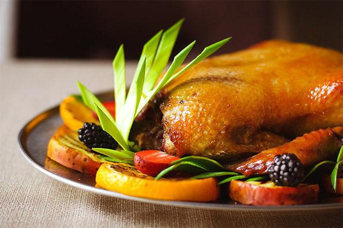
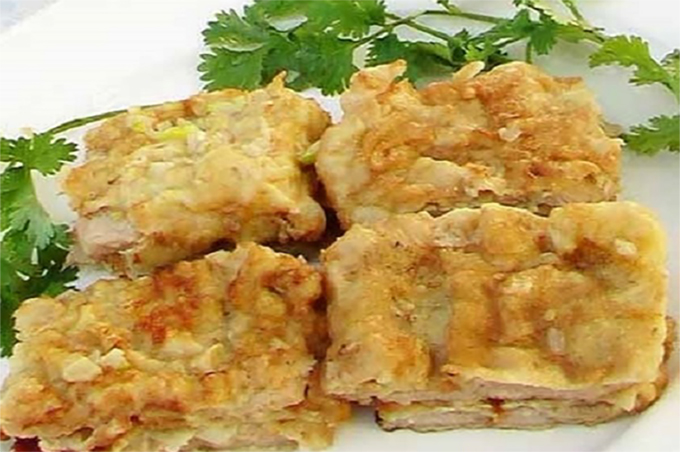
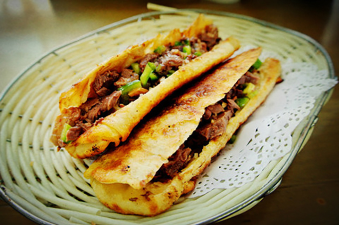
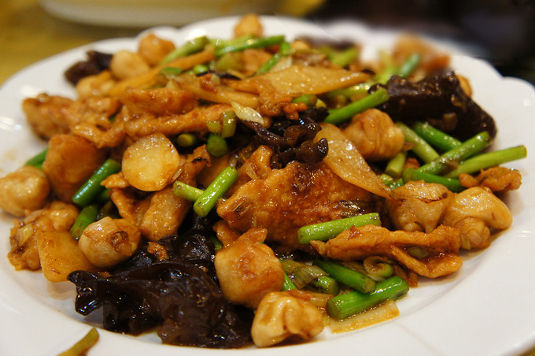
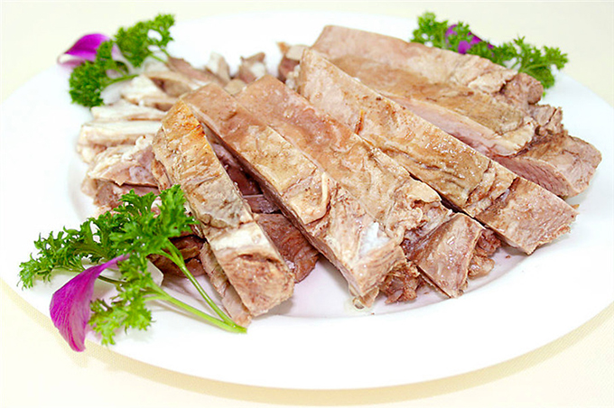
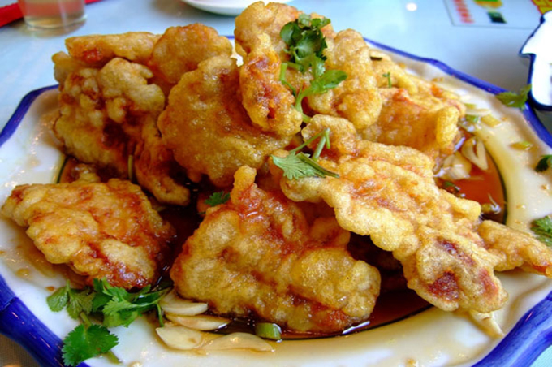
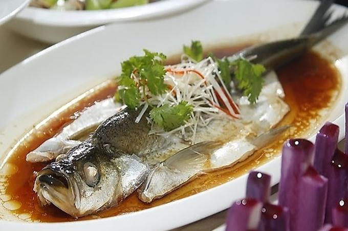
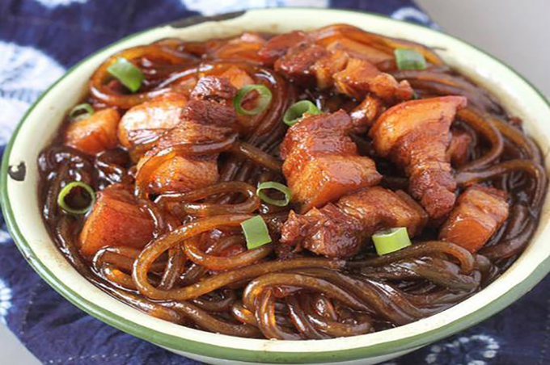
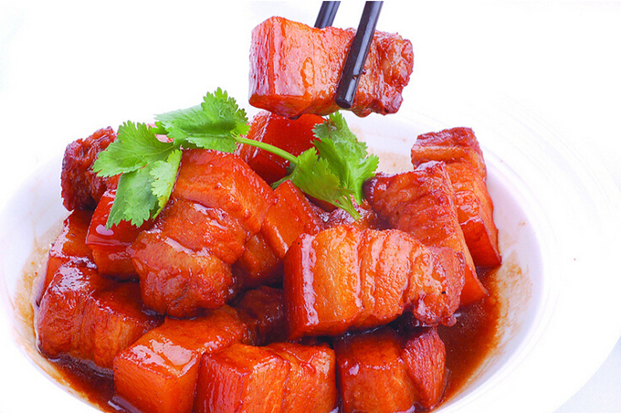

×

China
____
Традиционная еда
Пекин: жареная утка по-Пекински 北京烤鸭 Běijīng kǎoyā — Жареную утку по-Пекински прославляют как «самое вкусное блюдо на свете». У нее золотисто-коричневая, хрустящая корочка, нежное мясо и резкий вкус. Это сочетание сделало ее популярной как на родине, так и в других странах.

Тяньцзынь: запеченное свиное филе 锅塌里脊 Guōtā lǐjí — Запеченное свиное филе делают из свиной вырезки. Блюдо обладает ярким желтым цветом и свежим нежным вкусом.

Хэбэй: лепешки с мясом осла 驴肉火烧 Lǘ ròu huǒshāo — Эта закуска популярна на севере Китая. Впервые появилась в городе Баодин провинции Хэбэй. Начините лепешку рубленым мясом осла и получится Люйжоухошао. Закуска получается сытной, но не жирной, хрустящей и с приятным послевкусием.

Шаньси: варено-жареная свинина с грибами 过油肉 Guò yóu ròu — Изначально считалось блюдом для избранных, а затем ушло в народ и распространилось по всей провинции Шаньси. Для него характерен насыщенный золотистый цвет, мягкое, нежное мясо. Само блюдо солоноватое с привкусом уксуса.

Внутренняя Монголия: отварное мясо ягненка по-Монгольски 手扒羊肉 Shǒu bā yángròu — Отварное мясо ягненка – традиционное блюдо монгольских пастухов на протяжении тысячелетий. Его едят руками.

Хэйлунцзян: жареная свинина с хрустящей корочкой 锅包肉 Guō bāo ròu — Это культовое блюдо северо-восточной кухни Китая готовится из свинины. Сначала нарезанную на ломтики свиную вырезку маринуют, обмазывают крахмальной пастой и обжаривают до золотисто-коричневого цвета, поливают кисло-сладким соусом. Блюдо получается хрустящим снаружи и нежным внутри, кисло-сладким на вкус.

Гирин: белая рыба, приготовленная на пару 清蒸白鱼 Qīngzhēng bái yú — С древних времен рыбаки, промышлявшие на реке Сунгари, отваривали белую рыбу, чтобы поприветствовать таким образом друзей и родных. Со временем это блюдо приобрело известность и стало основным кушаньем во время местных празднеств.

Ляонин: тушеная свинина с вермишелью 猪肉炖粉条 Zhūròu dùn fěntiáo — Тушеная свинина с вермишелью – это блюдо, хорошо известно на северо-востоке Китая и особенно популярно во время холодной зимы Вермишель впитывает вкус мяса, и становится сытной, но не жирной.

Шанхай: красная тушеная свинина 红烧肉 Hóngshāo ròu — Красная тушеная свинина – классическое шанхайское блюдо. В основном, мясо берут из подбрюшины. В процессе приготовления оно становится сытным, но не жирным, и очень приятным на вкус. Шанхайцы, подтвердите!

____